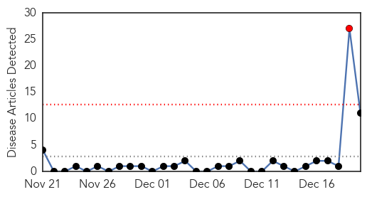
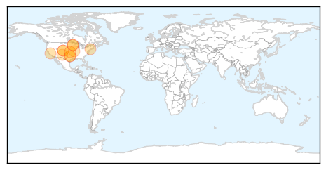

30 Day Trends
Web: 1 alerts, 0 warnings
Twitter: 0 alerts, 0 warnings
Top Articles:
- 0.985
- CDC Warns of Listeria Danger From Caramel Apples
- 0.979
- Health Officials Announce Listeria Outbreak Associated With Packaged Caramel Apples
- 0.970
- CDC warns Americans to avoid caramel apples
- 0.946
- 4 dead, 28 sickened after eating caramel apples
- 0.933
- Caramel Apples Linked to Texas Listeria Death
- 0.914
- Prepackaged caramel apples linked to 4 deaths
- 0.907
- Carnival and Kitchen Cravings Caramel Apples Cause Listeriosis: CDC Reports
- 0.906
- Prepackaged caramel apples linked to 4 deaths in 10 states, officials say
- 0.905
- Caramel apples linked to 4 deaths
- 0.895
- Prepackaged caramel apples linked to 4 deaths
- 0.759
- Prepackaged caramel apples linked to four deaths
Top Tweets:
-
No tweets found for Dec 20, 2014
Web/News Articles
Tweets

Article Locations
Article Confidences